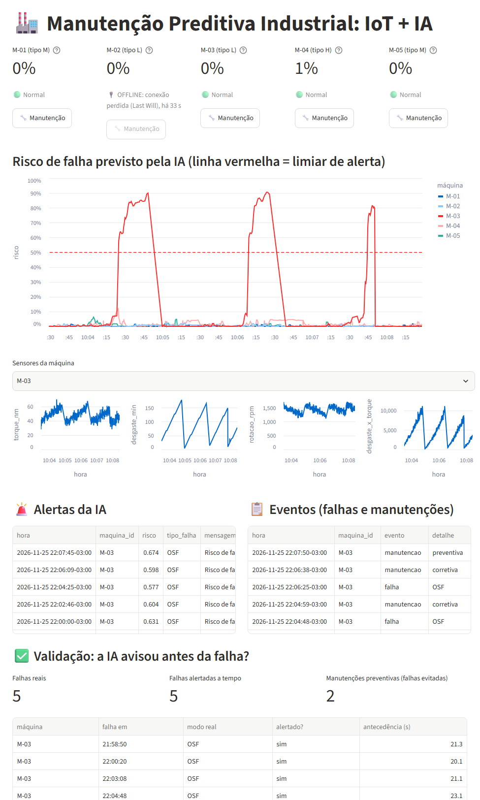

| Integrantes: | [Nome do integrante 1] [Nome do integrante 2] [Nome do integrante 3] [Nome do integrante 4] |
| Repositório: | github.com/guustavomc/IOT-Predictive-Maintenance |
| Vídeo (pitch & demo): | [link do vídeo] |
Este trabalho apresenta um sistema de manutenção preditiva para máquinas industriais que integra os três pilares da disciplina. Na camada de IoT, cada máquina (simulada em contêineres Docker independentes e, opcionalmente, um ESP32 com sensores no simulador Wokwi) publica telemetria de temperatura, rotação, torque e desgaste da ferramenta via MQTT. Na camada de Big Data, um serviço consome o fluxo contínuo em micro-lotes, mantém janelas deslizantes por máquina e grava a série temporal. Na camada de IA, dois modelos Random Forest treinados com o dataset público AI4I 2020 estimam a probabilidade de falha e a causa provável. Para que o alerta saia antes da falha, o serviço projeta a tendência de cada sensor e avalia o estado futuro da máquina.
O modelo obteve ROC AUC de 0,972, precisão de 0,90 e recall de 0,82 na classe falha. Acertou todas as falhas de sobrecarga e de potência do conjunto de teste e 28 de 29 falhas térmicas. Em operação, as falhas da máquina em degradação foram alertadas com antecedência, sem alarmes falsos nas máquinas saudáveis, e o painel permite enviar uma ordem de manutenção por MQTT que evita a falha.
Em uma linha de produção, a parada não planejada de um equipamento interrompe a produção, atrasa entregas, pode danificar outros componentes e exige um reparo emergencial, normalmente mais caro e mais demorado que um reparo planejado. As duas estratégias tradicionais de manutenção lidam mal com esse problema:
| Estratégia | Como funciona | Limitação |
|---|---|---|
| Corretiva | Conserta depois que o equipamento quebra. | Parada inesperada, dano maior e reparo emergencial. |
| Preventiva (por calendário) | Troca peças em intervalos fixos de tempo ou de uso. | Descarta peças ainda boas e não evita falhas que acontecem fora do calendário. |
| Preditiva (este projeto) | Monitora a condição real da máquina e intervém quando os dados indicam risco. | Exige sensores, infraestrutura de dados e um modelo confiável, que é o que este projeto constrói. |
O problema tratado é, portanto: a partir da telemetria contínua dos sensores de cada máquina, identificar com antecedência quando ela está caminhando para uma falha, indicar a causa provável e permitir que a manutenção seja acionada antes da quebra.
A manutenção preditiva é um dos casos de uso mais característicos da Indústria 4.0, e depende justamente da combinação estudada na disciplina:
Além disso, existe um dataset público e bem documentado para o problema (AI4I 2020, UCI), com os mesmos sensores de uma máquina de usinagem e cinco modos de falha rotulados, o que permite treinar e avaliar o modelo com dados reais e de forma reproduzível.
Antecipar uma falha transforma uma parada emergencial em uma intervenção programada: a equipe é avisada, a peça é trocada no momento certo e a linha não para de surpresa. Os objetivos do projeto foram:
O sistema segue a divisão de um sistema IoT real em dois projetos independentes: o chão de fábrica (dispositivos/) e a plataforma (plataforma/). Eles não compartilham código; o único acoplamento é o contrato (contrato/), formado pelos tópicos MQTT e pelos JSON Schemas das mensagens.
O fluxo é: (1) cada máquina publica sua telemetria no broker; (2) o serviço de inferência assina os tópicos, valida as mensagens, calcula o risco e grava tudo no banco; (3) quando o risco passa do limiar, publica um alerta em fabrica/alertas; (4) o painel lê o banco e mostra o estado da frota; (5) o operador pode enviar uma ordem de manutenção que volta, pelo broker, apenas para a máquina indicada.
| Camada | Tecnologia | Uso no projeto |
|---|---|---|
| Sensores | Temperatura do ar e do processo, rotação, torque, desgaste da ferramenta | Mesmas grandezas do dataset AI4I 2020. Simulados em Python (com física de degradação) e, no ESP32, medidos por DHT22, termistor NTC e potenciômetros. |
| Dispositivo | Python 3.11 + paho-mqtt + NumPy; ESP32 (Arduino, PubSubClient, ArduinoJson) no Wokwi | Firmware que lê sensores, publica telemetria/eventos/status e executa comandos. |
| Comunicação | MQTT · Eclipse Mosquitto 2 | Publish/subscribe, QoS 0 para telemetria e QoS 1 para eventos, comandos e alertas, Last Will e mensagens retidas para status online/offline, bridge para o broker público. |
| Contrato | JSON Schema + jsonschema | Define o formato de cada mensagem; a plataforma descarta tudo o que estiver fora do contrato. |
| Big Data / fluxo | Processamento em micro-lotes, janelas deslizantes, pandas | Ingestão contínua de várias máquinas, cálculo de tendência e predição vetorizada por lote. |
| Armazenamento | SQLite (modo WAL) | Série temporal de leituras, alertas, eventos e conexões; isolado em um módulo para troca por InfluxDB/TimescaleDB. |
| IA | scikit-learn (Random Forest), joblib | Modelo de probabilidade de falha e modelo de tipo de falha. |
| Dados de treino | AI4I 2020 Predictive Maintenance Dataset (UCI, CC BY 4.0) | 10.000 registros, 3,39% de falhas, 5 modos de falha. |
| Visualização | Streamlit + Altair | Painel ao vivo com risco, sensores, alertas, eventos, validação e botão de manutenção. |
| Implantação | Docker + Docker Compose | Um contêiner por máquina, broker, treino, inferência e painel; tudo sobe com um comando. |
O desenvolvimento foi incremental, com cada etapa entregue em uma branch e integrada por pull request no GitHub. A sequência foi:
Na parte de IA, a metodologia seguiu as etapas usuais de um projeto de ciência de dados: entendimento do dataset e dos modos de falha, engenharia de atributos com base na física do processo, divisão estratificada treino/teste (80/20), escolha de métricas adequadas a classes desbalanceadas (recall, precisão, F1 e ROC AUC, e não acurácia) e, por fim, validação do modelo em operação, medindo a antecedência dos alertas sobre falhas reais.
Os tópicos seguem o padrão fabrica/maquinas/<id>/<tipo> e toda mensagem é validada contra um JSON Schema; o que estiver fora do contrato é descartado. A telemetria usa QoS 0 (perder uma leitura entre centenas não faz diferença); o restante usa QoS 1, porque precisa chegar.
| Tópico | Direção | QoS | Conteúdo |
|---|---|---|---|
…/<id>/telemetria | máquina → plataforma | 0 | leitura dos 5 sensores + tipo de produto |
…/<id>/evento | máquina → plataforma | 1 | falha (com o modo) ou manutencao |
…/<id>/status | máquina ou broker → plataforma | 1, retido | online / offline |
…/<id>/comando | plataforma → máquina | 1 | {"acao": "manutencao"} |
fabrica/alertas | plataforma → assinantes | 1 | risco, tipo de falha e mensagem |
O projeto dispositivos/simulador/ faz o papel do hardware, com um contêiner por máquina. O firmware (simulador.py) publica uma leitura a cada 0,5 s, assina só os comandos da própria máquina e registra um Last Will: se a máquina cair sem aviso, o próprio broker publica offline em nome dela. A física (maquina.py) segue o processo documentado do AI4I 2020: máquinas saudáveis trocam a ferramenta por rotina, enquanto uma máquina configurada para degradar tem o torque subindo aos poucos até o produto desgaste × torque passar do limite e ocorrer uma falha por sobrecarga (OSF). Essas regras ficam só no dispositivo; a IA recebe apenas a telemetria.
Para mostrar que o simulador pode ser trocado por hardware, há também um ESP32 no simulador Wokwi (máquina M-06), com DHT22, termistor, potenciômetros e LEDs. Ele segue o mesmo contrato e chega à plataforma por um bridge do Mosquitto, sem nenhuma mudança no código da plataforma.
O treino usa o dataset AI4I 2020: 10.000 registros de uma fresadora, com 3,39% de falhas divididas em cinco modos.
| Modo | Significado | Condição física documentada | Ocorrências |
|---|---|---|---|
| TWF | Desgaste da ferramenta | falha em ponto aleatório entre 200 e 240 min | 46 |
| HDF | Dissipação de calor | Δtemperatura < 8,6 K e rotação < 1380 rpm | 115 |
| PWF | Potência | potência < 3500 W ou > 9000 W | 95 |
| OSF | Sobrecarga | desgaste × torque > 11.000 / 12.000 / 13.000 (L/M/H) | 98 |
| RNF | Aleatória | 0,1% de chance, independente dos sensores | 19 |
Além dos cinco sensores e do tipo de produto, o modelo recebe três atributos físicos derivados: delta_temp_k, potencia_w e desgaste_x_torque. São treinados dois Random Forest: o modelo_falha (200 árvores, com class_weight="balanced_subsample" para compensar a raridade das falhas) estima a probabilidade de falha, e o modelo_tipo, treinado só com as falhas, indica a causa provável. O Random Forest foi escolhido porque as falhas do AI4I são combinações de limiares físicos, que árvores capturam bem, e porque ele informa a importância de cada atributo.
Classificar só a leitura atual reconhece a falha quando ela já está acontecendo. Para alertar antes, o serviço de inferência mantém uma janela deslizante das últimas 60 leituras de cada máquina, ajusta uma regressão linear em cada sensor e projeta o estado da máquina 50 leituras à frente. O modelo avalia o estado atual e o projetado; o risco é o maior dos dois, suavizado por média móvel. Se passar de 0,5, sai um alerta com a causa provável, que fica aberto até a manutenção ou a falha.
As mensagens são processadas em micro-lotes de 0,5 s: uma única predição vetorizada e uma única transação no banco por lote, o mesmo padrão do Spark Streaming.
O painel Streamlit atualiza a cada 2 s e mostra, para cada máquina, o risco e o status (normal, atenção, alerta, parada, sem sinal ou offline), com um botão 🔧 Manutenção que envia o comando MQTT para ela. Traz ainda o gráfico de risco de todas as máquinas, os sensores da máquina selecionada, as tabelas de alertas e eventos e a seção "Validação: a IA avisou antes da falha?", que mede a antecedência de cada alerta (Figura 3).
Avaliação no conjunto de teste estratificado (2.000 registros, 68 falhas), com limiar de 0,5:
| Previsto normal | Previsto falha | |
|---|---|---|
| Real normal | 1926 VN | 6 FP |
| Real falha | 12 FN | 56 VP |
A acurácia não é a métrica relevante: dizer sempre "normal" já daria 96,6%. Na classe falha, o modelo encontra 56 das 68 falhas e gera só 6 alarmes falsos em 1.932 leituras normais.
| Modo de falha | Detectadas no teste | Interpretação |
|---|---|---|
| OSF – sobrecarga | 16 / 16 | causa física |
| PWF – potência | 13 / 13 | causa física |
| HDF – calor | 28 / 29 | causa física |
| TWF – desgaste da ferramenta | 1 / 10 | falha em ponto aleatório entre 200 e 240 min |
| Sem modo informado | 0 / 2 | ruído de rótulo do dataset |
Insight: nas falhas com causa física (HDF, PWF ou OSF), o recall é de 56/57 (98%). Dos 12 erros, 11 são falhas aleatórias por construção do dataset, que nenhum modelo preveria pelos sensores. Por isso, a falha de ferramenta deve ser tratada por troca preventiva antes de 200 min, e não pela IA.
A importância dos atributos mostra que o modelo "redescobriu" a física do processo: rotação, torque e potência dominam as decisões. Quanto ao limiar, a varredura no teste mostra que 0,5 equilibra falhas perdidas e alarmes falsos:
| Limiar | 0,2 | 0,3 | 0,4 | 0,5 | 0,6 | 0,7 |
|---|---|---|---|---|---|---|
| Falhas detectadas | 61 | 59 | 58 | 56 | 54 | 51 |
| Alarmes falsos | 45 | 20 | 9 | 6 | 4 | 2 |
O sistema completo foi executado com docker compose up por 11,2 minutos (5.952 leituras), com a M-03 configurada para degradar e as outras quatro máquinas saudáveis.
Todas as cinco falhas da M-03 foram alertadas de 33 a 47 leituras antes, sempre com a causa correta. Num sexto ciclo, a ordem de manutenção foi enviada logo após o alerta e a falha foi evitada. Nas máquinas saudáveis, o risco máximo foi de 12,4%, sem nenhum alerta. A antecedência em segundos é curta porque a simulação é acelerada: numa máquina real, com amostragem mais espaçada, ela seria proporcionalmente maior.

Com os micro-lotes, um teste de carga com 20 máquinas a cada 0,1 s (≈200 mensagens/s) processou 17.413 leituras em 90 s, com atraso em torno de 1 s; a versão anterior, mensagem por mensagem, acumulava atraso já com ~30 mensagens/s. Na resiliência, derrubar o contêiner da M-02 com docker compose kill fez o broker publicar o Last Will: o painel marcou só a M-02 como offline e as demais seguiram normalmente (Figura 3).
O projeto entregou uma solução funcional de manutenção preditiva que une IoT (dispositivos e comandos via MQTT), Big Data (fluxo contínuo em micro-lotes e série temporal) e IA (Random Forest treinado com dados reais). O modelo alcançou ROC AUC de 0,972 e recall de 98% nas falhas com causa física, e, em operação, alertou todas as falhas antes que acontecessem, sem alarmes falsos, fechando o ciclo com a ordem de manutenção que evitou uma falha.